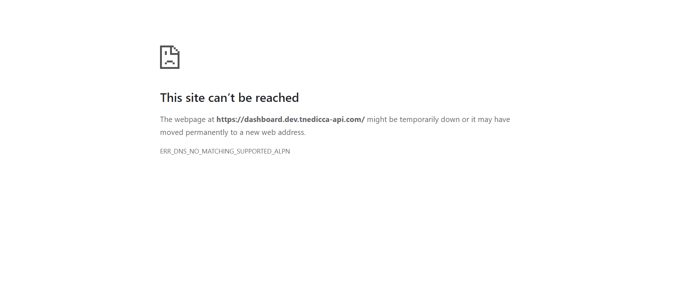

| Status | Timestamp | Details |
|---|---|---|
| cancel | 2:37:25 PM |
Exception Occured:Click to see[java.base/jdk.internal.reflect.NativeConstructorAccessorImpl.newInstance0(Native Method)java.base/jdk.internal.reflect.NativeConstructorAccessorImpl.newInstance(NativeConstructorAccessorImpl.java:62) java.base/jdk.internal.reflect.DelegatingConstructorAccessorImpl.newInstance(DelegatingConstructorAccessorImpl.java:45) java.base/java.lang.reflect.Constructor.newInstance(Constructor.java:490) org.openqa.selenium.remote.codec.w3c.W3CHttpResponseCodec.createException(W3CHttpResponseCodec.java:200) org.openqa.selenium.remote.codec.w3c.W3CHttpResponseCodec.decode(W3CHttpResponseCodec.java:133) org.openqa.selenium.remote.codec.w3c.W3CHttpResponseCodec.decode(W3CHttpResponseCodec.java:52) org.openqa.selenium.remote.HttpCommandExecutor.execute(HttpCommandExecutor.java:191) org.openqa.selenium.remote.service.DriverCommandExecutor.invokeExecute(DriverCommandExecutor.java:200) org.openqa.selenium.remote.service.DriverCommandExecutor.execute(DriverCommandExecutor.java:175) org.openqa.selenium.remote.RemoteWebDriver.execute(RemoteWebDriver.java:607) org.openqa.selenium.remote.ElementLocation$ElementFinder$2.findElement(ElementLocation.java:165) org.openqa.selenium.remote.ElementLocation.findElement(ElementLocation.java:66) org.openqa.selenium.remote.RemoteWebDriver.findElement(RemoteWebDriver.java:364) org.openqa.selenium.remote.RemoteWebDriver.findElement(RemoteWebDriver.java:358) org.openqa.selenium.support.pagefactory.DefaultElementLocator.findElement(DefaultElementLocator.java:68) org.openqa.selenium.support.pagefactory.internal.LocatingElementHandler.invoke(LocatingElementHandler.java:38) com.sun.proxy.$Proxy10.sendKeys(Unknown Source) Test_case.To_Verify_login_page.login(To_Verify_login_page.java:21) Test_case.To_Verify_login_page.loginpage(To_Verify_login_page.java:49) java.base/jdk.internal.reflect.NativeMethodAccessorImpl.invoke0(Native Method) java.base/jdk.internal.reflect.NativeMethodAccessorImpl.invoke(NativeMethodAccessorImpl.java:62) java.base/jdk.internal.reflect.DelegatingMethodAccessorImpl.invoke(DelegatingMethodAccessorImpl.java:43) java.base/java.lang.reflect.Method.invoke(Method.java:566) org.testng.internal.invokers.MethodInvocationHelper.invokeMethod(MethodInvocationHelper.java:139) org.testng.internal.invokers.TestInvoker.invokeMethod(TestInvoker.java:664) org.testng.internal.invokers.TestInvoker.invokeTestMethod(TestInvoker.java:228) org.testng.internal.invokers.MethodRunner.runInSequence(MethodRunner.java:63) org.testng.internal.invokers.TestInvoker$MethodInvocationAgent.invoke(TestInvoker.java:961) org.testng.internal.invokers.TestInvoker.invokeTestMethods(TestInvoker.java:201) org.testng.internal.invokers.TestMethodWorker.invokeTestMethods(TestMethodWorker.java:148) org.testng.internal.invokers.TestMethodWorker.run(TestMethodWorker.java:128) java.base/java.util.ArrayList.forEach(ArrayList.java:1541) org.testng.TestRunner.privateRun(TestRunner.java:819) org.testng.TestRunner.run(TestRunner.java:619) org.testng.SuiteRunner.runTest(SuiteRunner.java:443) org.testng.SuiteRunner.runSequentially(SuiteRunner.java:437) org.testng.SuiteRunner.privateRun(SuiteRunner.java:397) org.testng.SuiteRunner.run(SuiteRunner.java:336) org.testng.SuiteRunnerWorker.runSuite(SuiteRunnerWorker.java:52) org.testng.SuiteRunnerWorker.run(SuiteRunnerWorker.java:95) org.testng.TestNG.runSuitesSequentially(TestNG.java:1301) org.testng.TestNG.runSuitesLocally(TestNG.java:1228) org.testng.TestNG.runSuites(TestNG.java:1134) org.testng.TestNG.run(TestNG.java:1101) org.apache.maven.surefire.testng.TestNGExecutor.run(TestNGExecutor.java:308) org.apache.maven.surefire.testng.TestNGXmlTestSuite.execute(TestNGXmlTestSuite.java:71) org.apache.maven.surefire.testng.TestNGProvider.invoke(TestNGProvider.java:113) org.apache.maven.surefire.booter.ForkedBooter.runSuitesInProcess(ForkedBooter.java:385) org.apache.maven.surefire.booter.ForkedBooter.execute(ForkedBooter.java:162) org.apache.maven.surefire.booter.ForkedBooter.run(ForkedBooter.java:507) org.apache.maven.surefire.booter.ForkedBooter.main(ForkedBooter.java:495)] |
| cancel | 2:37:25 PM | Screenshot of failure  |
| cancel | 2:37:25 PM | TEST CASE FAILED |
| Status | Timestamp | Details |
|---|---|---|
| cancel | 2:37:47 PM |
Exception Occured:Click to see[java.base/jdk.internal.reflect.NativeConstructorAccessorImpl.newInstance0(Native Method)java.base/jdk.internal.reflect.NativeConstructorAccessorImpl.newInstance(NativeConstructorAccessorImpl.java:62) java.base/jdk.internal.reflect.DelegatingConstructorAccessorImpl.newInstance(DelegatingConstructorAccessorImpl.java:45) java.base/java.lang.reflect.Constructor.newInstance(Constructor.java:490) org.openqa.selenium.remote.codec.w3c.W3CHttpResponseCodec.createException(W3CHttpResponseCodec.java:200) org.openqa.selenium.remote.codec.w3c.W3CHttpResponseCodec.decode(W3CHttpResponseCodec.java:133) org.openqa.selenium.remote.codec.w3c.W3CHttpResponseCodec.decode(W3CHttpResponseCodec.java:52) org.openqa.selenium.remote.HttpCommandExecutor.execute(HttpCommandExecutor.java:191) org.openqa.selenium.remote.service.DriverCommandExecutor.invokeExecute(DriverCommandExecutor.java:200) org.openqa.selenium.remote.service.DriverCommandExecutor.execute(DriverCommandExecutor.java:175) org.openqa.selenium.remote.RemoteWebDriver.execute(RemoteWebDriver.java:607) org.openqa.selenium.remote.ElementLocation$ElementFinder$2.findElement(ElementLocation.java:165) org.openqa.selenium.remote.ElementLocation.findElement(ElementLocation.java:66) org.openqa.selenium.remote.RemoteWebDriver.findElement(RemoteWebDriver.java:364) org.openqa.selenium.remote.RemoteWebDriver.findElement(RemoteWebDriver.java:358) org.openqa.selenium.support.pagefactory.DefaultElementLocator.findElement(DefaultElementLocator.java:68) org.openqa.selenium.support.pagefactory.internal.LocatingElementHandler.invoke(LocatingElementHandler.java:38) com.sun.proxy.$Proxy10.sendKeys(Unknown Source) Test_case.Login_with_invalid_credential.invalid_userid(Login_with_invalid_credential.java:19) Test_case.Login_with_invalid_credential.Invalid_inputs(Login_with_invalid_credential.java:62) java.base/jdk.internal.reflect.NativeMethodAccessorImpl.invoke0(Native Method) java.base/jdk.internal.reflect.NativeMethodAccessorImpl.invoke(NativeMethodAccessorImpl.java:62) java.base/jdk.internal.reflect.DelegatingMethodAccessorImpl.invoke(DelegatingMethodAccessorImpl.java:43) java.base/java.lang.reflect.Method.invoke(Method.java:566) org.testng.internal.invokers.MethodInvocationHelper.invokeMethod(MethodInvocationHelper.java:139) org.testng.internal.invokers.TestInvoker.invokeMethod(TestInvoker.java:664) org.testng.internal.invokers.TestInvoker.invokeTestMethod(TestInvoker.java:228) org.testng.internal.invokers.MethodRunner.runInSequence(MethodRunner.java:63) org.testng.internal.invokers.TestInvoker$MethodInvocationAgent.invoke(TestInvoker.java:961) org.testng.internal.invokers.TestInvoker.invokeTestMethods(TestInvoker.java:201) org.testng.internal.invokers.TestMethodWorker.invokeTestMethods(TestMethodWorker.java:148) org.testng.internal.invokers.TestMethodWorker.run(TestMethodWorker.java:128) java.base/java.util.ArrayList.forEach(ArrayList.java:1541) org.testng.TestRunner.privateRun(TestRunner.java:819) org.testng.TestRunner.run(TestRunner.java:619) org.testng.SuiteRunner.runTest(SuiteRunner.java:443) org.testng.SuiteRunner.runSequentially(SuiteRunner.java:437) org.testng.SuiteRunner.privateRun(SuiteRunner.java:397) org.testng.SuiteRunner.run(SuiteRunner.java:336) org.testng.SuiteRunnerWorker.runSuite(SuiteRunnerWorker.java:52) org.testng.SuiteRunnerWorker.run(SuiteRunnerWorker.java:95) org.testng.TestNG.runSuitesSequentially(TestNG.java:1301) org.testng.TestNG.runSuitesLocally(TestNG.java:1228) org.testng.TestNG.runSuites(TestNG.java:1134) org.testng.TestNG.run(TestNG.java:1101) org.apache.maven.surefire.testng.TestNGExecutor.run(TestNGExecutor.java:308) org.apache.maven.surefire.testng.TestNGXmlTestSuite.execute(TestNGXmlTestSuite.java:71) org.apache.maven.surefire.testng.TestNGProvider.invoke(TestNGProvider.java:113) org.apache.maven.surefire.booter.ForkedBooter.runSuitesInProcess(ForkedBooter.java:385) org.apache.maven.surefire.booter.ForkedBooter.execute(ForkedBooter.java:162) org.apache.maven.surefire.booter.ForkedBooter.run(ForkedBooter.java:507) org.apache.maven.surefire.booter.ForkedBooter.main(ForkedBooter.java:495)] |
| cancel | 2:37:47 PM | TEST CASE FAILED |
| Status | Timestamp | Details |
|---|---|---|
| cancel | 2:37:51 PM |
Exception Occured:Click to see[java.base/jdk.internal.reflect.NativeConstructorAccessorImpl.newInstance0(Native Method)java.base/jdk.internal.reflect.NativeConstructorAccessorImpl.newInstance(NativeConstructorAccessorImpl.java:62) java.base/jdk.internal.reflect.DelegatingConstructorAccessorImpl.newInstance(DelegatingConstructorAccessorImpl.java:45) java.base/java.lang.reflect.Constructor.newInstance(Constructor.java:490) org.openqa.selenium.remote.codec.w3c.W3CHttpResponseCodec.createException(W3CHttpResponseCodec.java:200) org.openqa.selenium.remote.codec.w3c.W3CHttpResponseCodec.decode(W3CHttpResponseCodec.java:133) org.openqa.selenium.remote.codec.w3c.W3CHttpResponseCodec.decode(W3CHttpResponseCodec.java:52) org.openqa.selenium.remote.HttpCommandExecutor.execute(HttpCommandExecutor.java:191) org.openqa.selenium.remote.service.DriverCommandExecutor.invokeExecute(DriverCommandExecutor.java:200) org.openqa.selenium.remote.service.DriverCommandExecutor.execute(DriverCommandExecutor.java:175) org.openqa.selenium.remote.RemoteWebDriver.execute(RemoteWebDriver.java:607) org.openqa.selenium.remote.ElementLocation$ElementFinder$2.findElement(ElementLocation.java:165) org.openqa.selenium.remote.ElementLocation.findElement(ElementLocation.java:66) org.openqa.selenium.remote.RemoteWebDriver.findElement(RemoteWebDriver.java:364) org.openqa.selenium.remote.RemoteWebDriver.findElement(RemoteWebDriver.java:358) org.openqa.selenium.support.pagefactory.DefaultElementLocator.findElement(DefaultElementLocator.java:68) org.openqa.selenium.support.pagefactory.internal.LocatingElementHandler.invoke(LocatingElementHandler.java:38) com.sun.proxy.$Proxy10.sendKeys(Unknown Source) Test_case.To_verify_Home_page.login(To_verify_Home_page.java:29) Test_case.To_verify_Home_page.Homepage(To_verify_Home_page.java:184) java.base/jdk.internal.reflect.NativeMethodAccessorImpl.invoke0(Native Method) java.base/jdk.internal.reflect.NativeMethodAccessorImpl.invoke(NativeMethodAccessorImpl.java:62) java.base/jdk.internal.reflect.DelegatingMethodAccessorImpl.invoke(DelegatingMethodAccessorImpl.java:43) java.base/java.lang.reflect.Method.invoke(Method.java:566) org.testng.internal.invokers.MethodInvocationHelper.invokeMethod(MethodInvocationHelper.java:139) org.testng.internal.invokers.TestInvoker.invokeMethod(TestInvoker.java:664) org.testng.internal.invokers.TestInvoker.invokeTestMethod(TestInvoker.java:228) org.testng.internal.invokers.MethodRunner.runInSequence(MethodRunner.java:63) org.testng.internal.invokers.TestInvoker$MethodInvocationAgent.invoke(TestInvoker.java:961) org.testng.internal.invokers.TestInvoker.invokeTestMethods(TestInvoker.java:201) org.testng.internal.invokers.TestMethodWorker.invokeTestMethods(TestMethodWorker.java:148) org.testng.internal.invokers.TestMethodWorker.run(TestMethodWorker.java:128) java.base/java.util.ArrayList.forEach(ArrayList.java:1541) org.testng.TestRunner.privateRun(TestRunner.java:819) org.testng.TestRunner.run(TestRunner.java:619) org.testng.SuiteRunner.runTest(SuiteRunner.java:443) org.testng.SuiteRunner.runSequentially(SuiteRunner.java:437) org.testng.SuiteRunner.privateRun(SuiteRunner.java:397) org.testng.SuiteRunner.run(SuiteRunner.java:336) org.testng.SuiteRunnerWorker.runSuite(SuiteRunnerWorker.java:52) org.testng.SuiteRunnerWorker.run(SuiteRunnerWorker.java:95) org.testng.TestNG.runSuitesSequentially(TestNG.java:1301) org.testng.TestNG.runSuitesLocally(TestNG.java:1228) org.testng.TestNG.runSuites(TestNG.java:1134) org.testng.TestNG.run(TestNG.java:1101) org.apache.maven.surefire.testng.TestNGExecutor.run(TestNGExecutor.java:308) org.apache.maven.surefire.testng.TestNGXmlTestSuite.execute(TestNGXmlTestSuite.java:71) org.apache.maven.surefire.testng.TestNGProvider.invoke(TestNGProvider.java:113) org.apache.maven.surefire.booter.ForkedBooter.runSuitesInProcess(ForkedBooter.java:385) org.apache.maven.surefire.booter.ForkedBooter.execute(ForkedBooter.java:162) org.apache.maven.surefire.booter.ForkedBooter.run(ForkedBooter.java:507) org.apache.maven.surefire.booter.ForkedBooter.main(ForkedBooter.java:495)] |
| cancel | 2:37:51 PM | TEST CASE FAILED |
| Status | Timestamp | Details |
|---|---|---|
| cancel | 2:37:55 PM |
Exception Occured:Click to see[java.base/jdk.internal.reflect.NativeConstructorAccessorImpl.newInstance0(Native Method)java.base/jdk.internal.reflect.NativeConstructorAccessorImpl.newInstance(NativeConstructorAccessorImpl.java:62) java.base/jdk.internal.reflect.DelegatingConstructorAccessorImpl.newInstance(DelegatingConstructorAccessorImpl.java:45) java.base/java.lang.reflect.Constructor.newInstance(Constructor.java:490) org.openqa.selenium.remote.codec.w3c.W3CHttpResponseCodec.createException(W3CHttpResponseCodec.java:200) org.openqa.selenium.remote.codec.w3c.W3CHttpResponseCodec.decode(W3CHttpResponseCodec.java:133) org.openqa.selenium.remote.codec.w3c.W3CHttpResponseCodec.decode(W3CHttpResponseCodec.java:52) org.openqa.selenium.remote.HttpCommandExecutor.execute(HttpCommandExecutor.java:191) org.openqa.selenium.remote.service.DriverCommandExecutor.invokeExecute(DriverCommandExecutor.java:200) org.openqa.selenium.remote.service.DriverCommandExecutor.execute(DriverCommandExecutor.java:175) org.openqa.selenium.remote.RemoteWebDriver.execute(RemoteWebDriver.java:607) org.openqa.selenium.remote.ElementLocation$ElementFinder$2.findElement(ElementLocation.java:165) org.openqa.selenium.remote.ElementLocation.findElement(ElementLocation.java:66) org.openqa.selenium.remote.RemoteWebDriver.findElement(RemoteWebDriver.java:364) org.openqa.selenium.remote.RemoteWebDriver.findElement(RemoteWebDriver.java:358) org.openqa.selenium.support.pagefactory.DefaultElementLocator.findElement(DefaultElementLocator.java:68) org.openqa.selenium.support.pagefactory.internal.LocatingElementHandler.invoke(LocatingElementHandler.java:38) com.sun.proxy.$Proxy10.sendKeys(Unknown Source) Test_case.To_Verify_Edit_Client.login(To_Verify_Edit_Client.java:22) Test_case.To_Verify_Edit_Client.Edit_Client_Feature(To_Verify_Edit_Client.java:80) java.base/jdk.internal.reflect.NativeMethodAccessorImpl.invoke0(Native Method) java.base/jdk.internal.reflect.NativeMethodAccessorImpl.invoke(NativeMethodAccessorImpl.java:62) java.base/jdk.internal.reflect.DelegatingMethodAccessorImpl.invoke(DelegatingMethodAccessorImpl.java:43) java.base/java.lang.reflect.Method.invoke(Method.java:566) org.testng.internal.invokers.MethodInvocationHelper.invokeMethod(MethodInvocationHelper.java:139) org.testng.internal.invokers.TestInvoker.invokeMethod(TestInvoker.java:664) org.testng.internal.invokers.TestInvoker.invokeTestMethod(TestInvoker.java:228) org.testng.internal.invokers.MethodRunner.runInSequence(MethodRunner.java:63) org.testng.internal.invokers.TestInvoker$MethodInvocationAgent.invoke(TestInvoker.java:961) org.testng.internal.invokers.TestInvoker.invokeTestMethods(TestInvoker.java:201) org.testng.internal.invokers.TestMethodWorker.invokeTestMethods(TestMethodWorker.java:148) org.testng.internal.invokers.TestMethodWorker.run(TestMethodWorker.java:128) java.base/java.util.ArrayList.forEach(ArrayList.java:1541) org.testng.TestRunner.privateRun(TestRunner.java:819) org.testng.TestRunner.run(TestRunner.java:619) org.testng.SuiteRunner.runTest(SuiteRunner.java:443) org.testng.SuiteRunner.runSequentially(SuiteRunner.java:437) org.testng.SuiteRunner.privateRun(SuiteRunner.java:397) org.testng.SuiteRunner.run(SuiteRunner.java:336) org.testng.SuiteRunnerWorker.runSuite(SuiteRunnerWorker.java:52) org.testng.SuiteRunnerWorker.run(SuiteRunnerWorker.java:95) org.testng.TestNG.runSuitesSequentially(TestNG.java:1301) org.testng.TestNG.runSuitesLocally(TestNG.java:1228) org.testng.TestNG.runSuites(TestNG.java:1134) org.testng.TestNG.run(TestNG.java:1101) org.apache.maven.surefire.testng.TestNGExecutor.run(TestNGExecutor.java:308) org.apache.maven.surefire.testng.TestNGXmlTestSuite.execute(TestNGXmlTestSuite.java:71) org.apache.maven.surefire.testng.TestNGProvider.invoke(TestNGProvider.java:113) org.apache.maven.surefire.booter.ForkedBooter.runSuitesInProcess(ForkedBooter.java:385) org.apache.maven.surefire.booter.ForkedBooter.execute(ForkedBooter.java:162) org.apache.maven.surefire.booter.ForkedBooter.run(ForkedBooter.java:507) org.apache.maven.surefire.booter.ForkedBooter.main(ForkedBooter.java:495)] |
| cancel | 2:37:55 PM | TEST CASE FAILED |
| Status | Timestamp | Details |
|---|---|---|
| cancel | 2:37:58 PM |
Exception Occured:Click to see[java.base/jdk.internal.reflect.NativeConstructorAccessorImpl.newInstance0(Native Method)java.base/jdk.internal.reflect.NativeConstructorAccessorImpl.newInstance(NativeConstructorAccessorImpl.java:62) java.base/jdk.internal.reflect.DelegatingConstructorAccessorImpl.newInstance(DelegatingConstructorAccessorImpl.java:45) java.base/java.lang.reflect.Constructor.newInstance(Constructor.java:490) org.openqa.selenium.remote.codec.w3c.W3CHttpResponseCodec.createException(W3CHttpResponseCodec.java:200) org.openqa.selenium.remote.codec.w3c.W3CHttpResponseCodec.decode(W3CHttpResponseCodec.java:133) org.openqa.selenium.remote.codec.w3c.W3CHttpResponseCodec.decode(W3CHttpResponseCodec.java:52) org.openqa.selenium.remote.HttpCommandExecutor.execute(HttpCommandExecutor.java:191) org.openqa.selenium.remote.service.DriverCommandExecutor.invokeExecute(DriverCommandExecutor.java:200) org.openqa.selenium.remote.service.DriverCommandExecutor.execute(DriverCommandExecutor.java:175) org.openqa.selenium.remote.RemoteWebDriver.execute(RemoteWebDriver.java:607) org.openqa.selenium.remote.ElementLocation$ElementFinder$2.findElement(ElementLocation.java:165) org.openqa.selenium.remote.ElementLocation.findElement(ElementLocation.java:66) org.openqa.selenium.remote.RemoteWebDriver.findElement(RemoteWebDriver.java:364) org.openqa.selenium.remote.RemoteWebDriver.findElement(RemoteWebDriver.java:358) org.openqa.selenium.support.pagefactory.DefaultElementLocator.findElement(DefaultElementLocator.java:68) org.openqa.selenium.support.pagefactory.internal.LocatingElementHandler.invoke(LocatingElementHandler.java:38) com.sun.proxy.$Proxy10.sendKeys(Unknown Source) Test_case.To_Verify_Gateway_Control.login(To_Verify_Gateway_Control.java:22) Test_case.To_Verify_Gateway_Control.GatewayControl(To_Verify_Gateway_Control.java:119) java.base/jdk.internal.reflect.NativeMethodAccessorImpl.invoke0(Native Method) java.base/jdk.internal.reflect.NativeMethodAccessorImpl.invoke(NativeMethodAccessorImpl.java:62) java.base/jdk.internal.reflect.DelegatingMethodAccessorImpl.invoke(DelegatingMethodAccessorImpl.java:43) java.base/java.lang.reflect.Method.invoke(Method.java:566) org.testng.internal.invokers.MethodInvocationHelper.invokeMethod(MethodInvocationHelper.java:139) org.testng.internal.invokers.TestInvoker.invokeMethod(TestInvoker.java:664) org.testng.internal.invokers.TestInvoker.invokeTestMethod(TestInvoker.java:228) org.testng.internal.invokers.MethodRunner.runInSequence(MethodRunner.java:63) org.testng.internal.invokers.TestInvoker$MethodInvocationAgent.invoke(TestInvoker.java:961) org.testng.internal.invokers.TestInvoker.invokeTestMethods(TestInvoker.java:201) org.testng.internal.invokers.TestMethodWorker.invokeTestMethods(TestMethodWorker.java:148) org.testng.internal.invokers.TestMethodWorker.run(TestMethodWorker.java:128) java.base/java.util.ArrayList.forEach(ArrayList.java:1541) org.testng.TestRunner.privateRun(TestRunner.java:819) org.testng.TestRunner.run(TestRunner.java:619) org.testng.SuiteRunner.runTest(SuiteRunner.java:443) org.testng.SuiteRunner.runSequentially(SuiteRunner.java:437) org.testng.SuiteRunner.privateRun(SuiteRunner.java:397) org.testng.SuiteRunner.run(SuiteRunner.java:336) org.testng.SuiteRunnerWorker.runSuite(SuiteRunnerWorker.java:52) org.testng.SuiteRunnerWorker.run(SuiteRunnerWorker.java:95) org.testng.TestNG.runSuitesSequentially(TestNG.java:1301) org.testng.TestNG.runSuitesLocally(TestNG.java:1228) org.testng.TestNG.runSuites(TestNG.java:1134) org.testng.TestNG.run(TestNG.java:1101) org.apache.maven.surefire.testng.TestNGExecutor.run(TestNGExecutor.java:308) org.apache.maven.surefire.testng.TestNGXmlTestSuite.execute(TestNGXmlTestSuite.java:71) org.apache.maven.surefire.testng.TestNGProvider.invoke(TestNGProvider.java:113) org.apache.maven.surefire.booter.ForkedBooter.runSuitesInProcess(ForkedBooter.java:385) org.apache.maven.surefire.booter.ForkedBooter.execute(ForkedBooter.java:162) org.apache.maven.surefire.booter.ForkedBooter.run(ForkedBooter.java:507) org.apache.maven.surefire.booter.ForkedBooter.main(ForkedBooter.java:495)] |
| cancel | 2:37:58 PM | TEST CASE FAILED |
| Status | Timestamp | Details |
|---|---|---|
| cancel | 2:38:02 PM |
Exception Occured:Click to see[java.base/jdk.internal.reflect.NativeConstructorAccessorImpl.newInstance0(Native Method)java.base/jdk.internal.reflect.NativeConstructorAccessorImpl.newInstance(NativeConstructorAccessorImpl.java:62) java.base/jdk.internal.reflect.DelegatingConstructorAccessorImpl.newInstance(DelegatingConstructorAccessorImpl.java:45) java.base/java.lang.reflect.Constructor.newInstance(Constructor.java:490) org.openqa.selenium.remote.codec.w3c.W3CHttpResponseCodec.createException(W3CHttpResponseCodec.java:200) org.openqa.selenium.remote.codec.w3c.W3CHttpResponseCodec.decode(W3CHttpResponseCodec.java:133) org.openqa.selenium.remote.codec.w3c.W3CHttpResponseCodec.decode(W3CHttpResponseCodec.java:52) org.openqa.selenium.remote.HttpCommandExecutor.execute(HttpCommandExecutor.java:191) org.openqa.selenium.remote.service.DriverCommandExecutor.invokeExecute(DriverCommandExecutor.java:200) org.openqa.selenium.remote.service.DriverCommandExecutor.execute(DriverCommandExecutor.java:175) org.openqa.selenium.remote.RemoteWebDriver.execute(RemoteWebDriver.java:607) org.openqa.selenium.remote.ElementLocation$ElementFinder$2.findElement(ElementLocation.java:165) org.openqa.selenium.remote.ElementLocation.findElement(ElementLocation.java:66) org.openqa.selenium.remote.RemoteWebDriver.findElement(RemoteWebDriver.java:364) org.openqa.selenium.remote.RemoteWebDriver.findElement(RemoteWebDriver.java:358) org.openqa.selenium.support.pagefactory.DefaultElementLocator.findElement(DefaultElementLocator.java:68) org.openqa.selenium.support.pagefactory.internal.LocatingElementHandler.invoke(LocatingElementHandler.java:38) com.sun.proxy.$Proxy10.sendKeys(Unknown Source) Test_case.To_verify_failover_data_sync.login(To_verify_failover_data_sync.java:20) Test_case.To_verify_failover_data_sync.Failover(To_verify_failover_data_sync.java:106) java.base/jdk.internal.reflect.NativeMethodAccessorImpl.invoke0(Native Method) java.base/jdk.internal.reflect.NativeMethodAccessorImpl.invoke(NativeMethodAccessorImpl.java:62) java.base/jdk.internal.reflect.DelegatingMethodAccessorImpl.invoke(DelegatingMethodAccessorImpl.java:43) java.base/java.lang.reflect.Method.invoke(Method.java:566) org.testng.internal.invokers.MethodInvocationHelper.invokeMethod(MethodInvocationHelper.java:139) org.testng.internal.invokers.TestInvoker.invokeMethod(TestInvoker.java:664) org.testng.internal.invokers.TestInvoker.invokeTestMethod(TestInvoker.java:228) org.testng.internal.invokers.MethodRunner.runInSequence(MethodRunner.java:63) org.testng.internal.invokers.TestInvoker$MethodInvocationAgent.invoke(TestInvoker.java:961) org.testng.internal.invokers.TestInvoker.invokeTestMethods(TestInvoker.java:201) org.testng.internal.invokers.TestMethodWorker.invokeTestMethods(TestMethodWorker.java:148) org.testng.internal.invokers.TestMethodWorker.run(TestMethodWorker.java:128) java.base/java.util.ArrayList.forEach(ArrayList.java:1541) org.testng.TestRunner.privateRun(TestRunner.java:819) org.testng.TestRunner.run(TestRunner.java:619) org.testng.SuiteRunner.runTest(SuiteRunner.java:443) org.testng.SuiteRunner.runSequentially(SuiteRunner.java:437) org.testng.SuiteRunner.privateRun(SuiteRunner.java:397) org.testng.SuiteRunner.run(SuiteRunner.java:336) org.testng.SuiteRunnerWorker.runSuite(SuiteRunnerWorker.java:52) org.testng.SuiteRunnerWorker.run(SuiteRunnerWorker.java:95) org.testng.TestNG.runSuitesSequentially(TestNG.java:1301) org.testng.TestNG.runSuitesLocally(TestNG.java:1228) org.testng.TestNG.runSuites(TestNG.java:1134) org.testng.TestNG.run(TestNG.java:1101) org.apache.maven.surefire.testng.TestNGExecutor.run(TestNGExecutor.java:308) org.apache.maven.surefire.testng.TestNGXmlTestSuite.execute(TestNGXmlTestSuite.java:71) org.apache.maven.surefire.testng.TestNGProvider.invoke(TestNGProvider.java:113) org.apache.maven.surefire.booter.ForkedBooter.runSuitesInProcess(ForkedBooter.java:385) org.apache.maven.surefire.booter.ForkedBooter.execute(ForkedBooter.java:162) org.apache.maven.surefire.booter.ForkedBooter.run(ForkedBooter.java:507) org.apache.maven.surefire.booter.ForkedBooter.main(ForkedBooter.java:495)] |
| cancel | 2:38:02 PM | TEST CASE FAILED |
| Status | Timestamp | Details |
|---|---|---|
| cancel | 2:38:06 PM |
Exception Occured:Click to see[java.base/jdk.internal.reflect.NativeConstructorAccessorImpl.newInstance0(Native Method)java.base/jdk.internal.reflect.NativeConstructorAccessorImpl.newInstance(NativeConstructorAccessorImpl.java:62) java.base/jdk.internal.reflect.DelegatingConstructorAccessorImpl.newInstance(DelegatingConstructorAccessorImpl.java:45) java.base/java.lang.reflect.Constructor.newInstance(Constructor.java:490) org.openqa.selenium.remote.codec.w3c.W3CHttpResponseCodec.createException(W3CHttpResponseCodec.java:200) org.openqa.selenium.remote.codec.w3c.W3CHttpResponseCodec.decode(W3CHttpResponseCodec.java:133) org.openqa.selenium.remote.codec.w3c.W3CHttpResponseCodec.decode(W3CHttpResponseCodec.java:52) org.openqa.selenium.remote.HttpCommandExecutor.execute(HttpCommandExecutor.java:191) org.openqa.selenium.remote.service.DriverCommandExecutor.invokeExecute(DriverCommandExecutor.java:200) org.openqa.selenium.remote.service.DriverCommandExecutor.execute(DriverCommandExecutor.java:175) org.openqa.selenium.remote.RemoteWebDriver.execute(RemoteWebDriver.java:607) org.openqa.selenium.remote.ElementLocation$ElementFinder$2.findElement(ElementLocation.java:165) org.openqa.selenium.remote.ElementLocation.findElement(ElementLocation.java:66) org.openqa.selenium.remote.RemoteWebDriver.findElement(RemoteWebDriver.java:364) org.openqa.selenium.remote.RemoteWebDriver.findElement(RemoteWebDriver.java:358) org.openqa.selenium.support.pagefactory.DefaultElementLocator.findElement(DefaultElementLocator.java:68) org.openqa.selenium.support.pagefactory.internal.LocatingElementHandler.invoke(LocatingElementHandler.java:38) com.sun.proxy.$Proxy10.sendKeys(Unknown Source) Test_case.To_Verify_Application_Monitoring.login(To_Verify_Application_Monitoring.java:24) Test_case.To_Verify_Application_Monitoring.Application_monitoring(To_Verify_Application_Monitoring.java:107) java.base/jdk.internal.reflect.NativeMethodAccessorImpl.invoke0(Native Method) java.base/jdk.internal.reflect.NativeMethodAccessorImpl.invoke(NativeMethodAccessorImpl.java:62) java.base/jdk.internal.reflect.DelegatingMethodAccessorImpl.invoke(DelegatingMethodAccessorImpl.java:43) java.base/java.lang.reflect.Method.invoke(Method.java:566) org.testng.internal.invokers.MethodInvocationHelper.invokeMethod(MethodInvocationHelper.java:139) org.testng.internal.invokers.TestInvoker.invokeMethod(TestInvoker.java:664) org.testng.internal.invokers.TestInvoker.invokeTestMethod(TestInvoker.java:228) org.testng.internal.invokers.MethodRunner.runInSequence(MethodRunner.java:63) org.testng.internal.invokers.TestInvoker$MethodInvocationAgent.invoke(TestInvoker.java:961) org.testng.internal.invokers.TestInvoker.invokeTestMethods(TestInvoker.java:201) org.testng.internal.invokers.TestMethodWorker.invokeTestMethods(TestMethodWorker.java:148) org.testng.internal.invokers.TestMethodWorker.run(TestMethodWorker.java:128) java.base/java.util.ArrayList.forEach(ArrayList.java:1541) org.testng.TestRunner.privateRun(TestRunner.java:819) org.testng.TestRunner.run(TestRunner.java:619) org.testng.SuiteRunner.runTest(SuiteRunner.java:443) org.testng.SuiteRunner.runSequentially(SuiteRunner.java:437) org.testng.SuiteRunner.privateRun(SuiteRunner.java:397) org.testng.SuiteRunner.run(SuiteRunner.java:336) org.testng.SuiteRunnerWorker.runSuite(SuiteRunnerWorker.java:52) org.testng.SuiteRunnerWorker.run(SuiteRunnerWorker.java:95) org.testng.TestNG.runSuitesSequentially(TestNG.java:1301) org.testng.TestNG.runSuitesLocally(TestNG.java:1228) org.testng.TestNG.runSuites(TestNG.java:1134) org.testng.TestNG.run(TestNG.java:1101) org.apache.maven.surefire.testng.TestNGExecutor.run(TestNGExecutor.java:308) org.apache.maven.surefire.testng.TestNGXmlTestSuite.execute(TestNGXmlTestSuite.java:71) org.apache.maven.surefire.testng.TestNGProvider.invoke(TestNGProvider.java:113) org.apache.maven.surefire.booter.ForkedBooter.runSuitesInProcess(ForkedBooter.java:385) org.apache.maven.surefire.booter.ForkedBooter.execute(ForkedBooter.java:162) org.apache.maven.surefire.booter.ForkedBooter.run(ForkedBooter.java:507) org.apache.maven.surefire.booter.ForkedBooter.main(ForkedBooter.java:495)] |
| cancel | 2:38:06 PM | TEST CASE FAILED |
| Status | Timestamp | Details |
|---|---|---|
| cancel | 2:38:10 PM |
Exception Occured:Click to see[java.base/jdk.internal.reflect.NativeConstructorAccessorImpl.newInstance0(Native Method)java.base/jdk.internal.reflect.NativeConstructorAccessorImpl.newInstance(NativeConstructorAccessorImpl.java:62) java.base/jdk.internal.reflect.DelegatingConstructorAccessorImpl.newInstance(DelegatingConstructorAccessorImpl.java:45) java.base/java.lang.reflect.Constructor.newInstance(Constructor.java:490) org.openqa.selenium.remote.codec.w3c.W3CHttpResponseCodec.createException(W3CHttpResponseCodec.java:200) org.openqa.selenium.remote.codec.w3c.W3CHttpResponseCodec.decode(W3CHttpResponseCodec.java:133) org.openqa.selenium.remote.codec.w3c.W3CHttpResponseCodec.decode(W3CHttpResponseCodec.java:52) org.openqa.selenium.remote.HttpCommandExecutor.execute(HttpCommandExecutor.java:191) org.openqa.selenium.remote.service.DriverCommandExecutor.invokeExecute(DriverCommandExecutor.java:200) org.openqa.selenium.remote.service.DriverCommandExecutor.execute(DriverCommandExecutor.java:175) org.openqa.selenium.remote.RemoteWebDriver.execute(RemoteWebDriver.java:607) org.openqa.selenium.remote.ElementLocation$ElementFinder$2.findElement(ElementLocation.java:165) org.openqa.selenium.remote.ElementLocation.findElement(ElementLocation.java:66) org.openqa.selenium.remote.RemoteWebDriver.findElement(RemoteWebDriver.java:364) org.openqa.selenium.remote.RemoteWebDriver.findElement(RemoteWebDriver.java:358) org.openqa.selenium.support.pagefactory.DefaultElementLocator.findElement(DefaultElementLocator.java:68) org.openqa.selenium.support.pagefactory.internal.LocatingElementHandler.invoke(LocatingElementHandler.java:38) com.sun.proxy.$Proxy10.sendKeys(Unknown Source) Test_case.To_verify_GatewayMonitoring.login(To_verify_GatewayMonitoring.java:18) Test_case.To_verify_GatewayMonitoring.Gateway_monitoring(To_verify_GatewayMonitoring.java:97) java.base/jdk.internal.reflect.NativeMethodAccessorImpl.invoke0(Native Method) java.base/jdk.internal.reflect.NativeMethodAccessorImpl.invoke(NativeMethodAccessorImpl.java:62) java.base/jdk.internal.reflect.DelegatingMethodAccessorImpl.invoke(DelegatingMethodAccessorImpl.java:43) java.base/java.lang.reflect.Method.invoke(Method.java:566) org.testng.internal.invokers.MethodInvocationHelper.invokeMethod(MethodInvocationHelper.java:139) org.testng.internal.invokers.TestInvoker.invokeMethod(TestInvoker.java:664) org.testng.internal.invokers.TestInvoker.invokeTestMethod(TestInvoker.java:228) org.testng.internal.invokers.MethodRunner.runInSequence(MethodRunner.java:63) org.testng.internal.invokers.TestInvoker$MethodInvocationAgent.invoke(TestInvoker.java:961) org.testng.internal.invokers.TestInvoker.invokeTestMethods(TestInvoker.java:201) org.testng.internal.invokers.TestMethodWorker.invokeTestMethods(TestMethodWorker.java:148) org.testng.internal.invokers.TestMethodWorker.run(TestMethodWorker.java:128) java.base/java.util.ArrayList.forEach(ArrayList.java:1541) org.testng.TestRunner.privateRun(TestRunner.java:819) org.testng.TestRunner.run(TestRunner.java:619) org.testng.SuiteRunner.runTest(SuiteRunner.java:443) org.testng.SuiteRunner.runSequentially(SuiteRunner.java:437) org.testng.SuiteRunner.privateRun(SuiteRunner.java:397) org.testng.SuiteRunner.run(SuiteRunner.java:336) org.testng.SuiteRunnerWorker.runSuite(SuiteRunnerWorker.java:52) org.testng.SuiteRunnerWorker.run(SuiteRunnerWorker.java:95) org.testng.TestNG.runSuitesSequentially(TestNG.java:1301) org.testng.TestNG.runSuitesLocally(TestNG.java:1228) org.testng.TestNG.runSuites(TestNG.java:1134) org.testng.TestNG.run(TestNG.java:1101) org.apache.maven.surefire.testng.TestNGExecutor.run(TestNGExecutor.java:308) org.apache.maven.surefire.testng.TestNGXmlTestSuite.execute(TestNGXmlTestSuite.java:71) org.apache.maven.surefire.testng.TestNGProvider.invoke(TestNGProvider.java:113) org.apache.maven.surefire.booter.ForkedBooter.runSuitesInProcess(ForkedBooter.java:385) org.apache.maven.surefire.booter.ForkedBooter.execute(ForkedBooter.java:162) org.apache.maven.surefire.booter.ForkedBooter.run(ForkedBooter.java:507) org.apache.maven.surefire.booter.ForkedBooter.main(ForkedBooter.java:495)] |
| cancel | 2:38:10 PM | TEST CASE FAILED |
| Status | Timestamp | Details |
|---|---|---|
| cancel | 2:38:13 PM |
Exception Occured:Click to see[java.base/jdk.internal.reflect.NativeConstructorAccessorImpl.newInstance0(Native Method)java.base/jdk.internal.reflect.NativeConstructorAccessorImpl.newInstance(NativeConstructorAccessorImpl.java:62) java.base/jdk.internal.reflect.DelegatingConstructorAccessorImpl.newInstance(DelegatingConstructorAccessorImpl.java:45) java.base/java.lang.reflect.Constructor.newInstance(Constructor.java:490) org.openqa.selenium.remote.codec.w3c.W3CHttpResponseCodec.createException(W3CHttpResponseCodec.java:200) org.openqa.selenium.remote.codec.w3c.W3CHttpResponseCodec.decode(W3CHttpResponseCodec.java:133) org.openqa.selenium.remote.codec.w3c.W3CHttpResponseCodec.decode(W3CHttpResponseCodec.java:52) org.openqa.selenium.remote.HttpCommandExecutor.execute(HttpCommandExecutor.java:191) org.openqa.selenium.remote.service.DriverCommandExecutor.invokeExecute(DriverCommandExecutor.java:200) org.openqa.selenium.remote.service.DriverCommandExecutor.execute(DriverCommandExecutor.java:175) org.openqa.selenium.remote.RemoteWebDriver.execute(RemoteWebDriver.java:607) org.openqa.selenium.remote.ElementLocation$ElementFinder$2.findElement(ElementLocation.java:165) org.openqa.selenium.remote.ElementLocation.findElement(ElementLocation.java:66) org.openqa.selenium.remote.RemoteWebDriver.findElement(RemoteWebDriver.java:364) org.openqa.selenium.remote.RemoteWebDriver.findElement(RemoteWebDriver.java:358) org.openqa.selenium.support.pagefactory.DefaultElementLocator.findElement(DefaultElementLocator.java:68) org.openqa.selenium.support.pagefactory.internal.LocatingElementHandler.invoke(LocatingElementHandler.java:38) com.sun.proxy.$Proxy10.sendKeys(Unknown Source) Test_case.To_verify_HealthCheck.login(To_verify_HealthCheck.java:17) Test_case.To_verify_HealthCheck.Health_RequestID(To_verify_HealthCheck.java:53) java.base/jdk.internal.reflect.NativeMethodAccessorImpl.invoke0(Native Method) java.base/jdk.internal.reflect.NativeMethodAccessorImpl.invoke(NativeMethodAccessorImpl.java:62) java.base/jdk.internal.reflect.DelegatingMethodAccessorImpl.invoke(DelegatingMethodAccessorImpl.java:43) java.base/java.lang.reflect.Method.invoke(Method.java:566) org.testng.internal.invokers.MethodInvocationHelper.invokeMethod(MethodInvocationHelper.java:139) org.testng.internal.invokers.TestInvoker.invokeMethod(TestInvoker.java:664) org.testng.internal.invokers.TestInvoker.invokeTestMethod(TestInvoker.java:228) org.testng.internal.invokers.MethodRunner.runInSequence(MethodRunner.java:63) org.testng.internal.invokers.TestInvoker$MethodInvocationAgent.invoke(TestInvoker.java:961) org.testng.internal.invokers.TestInvoker.invokeTestMethods(TestInvoker.java:201) org.testng.internal.invokers.TestMethodWorker.invokeTestMethods(TestMethodWorker.java:148) org.testng.internal.invokers.TestMethodWorker.run(TestMethodWorker.java:128) java.base/java.util.ArrayList.forEach(ArrayList.java:1541) org.testng.TestRunner.privateRun(TestRunner.java:819) org.testng.TestRunner.run(TestRunner.java:619) org.testng.SuiteRunner.runTest(SuiteRunner.java:443) org.testng.SuiteRunner.runSequentially(SuiteRunner.java:437) org.testng.SuiteRunner.privateRun(SuiteRunner.java:397) org.testng.SuiteRunner.run(SuiteRunner.java:336) org.testng.SuiteRunnerWorker.runSuite(SuiteRunnerWorker.java:52) org.testng.SuiteRunnerWorker.run(SuiteRunnerWorker.java:95) org.testng.TestNG.runSuitesSequentially(TestNG.java:1301) org.testng.TestNG.runSuitesLocally(TestNG.java:1228) org.testng.TestNG.runSuites(TestNG.java:1134) org.testng.TestNG.run(TestNG.java:1101) org.apache.maven.surefire.testng.TestNGExecutor.run(TestNGExecutor.java:308) org.apache.maven.surefire.testng.TestNGXmlTestSuite.execute(TestNGXmlTestSuite.java:71) org.apache.maven.surefire.testng.TestNGProvider.invoke(TestNGProvider.java:113) org.apache.maven.surefire.booter.ForkedBooter.runSuitesInProcess(ForkedBooter.java:385) org.apache.maven.surefire.booter.ForkedBooter.execute(ForkedBooter.java:162) org.apache.maven.surefire.booter.ForkedBooter.run(ForkedBooter.java:507) org.apache.maven.surefire.booter.ForkedBooter.main(ForkedBooter.java:495)] |
| cancel | 2:38:13 PM | TEST CASE FAILED |
| Status | Timestamp | Details |
|---|---|---|
| cancel | 2:38:17 PM |
Exception Occured:Click to see[jdk.internal.reflect.GeneratedConstructorAccessor12.newInstance(Unknown Source)java.base/jdk.internal.reflect.DelegatingConstructorAccessorImpl.newInstance(DelegatingConstructorAccessorImpl.java:45) java.base/java.lang.reflect.Constructor.newInstance(Constructor.java:490) org.openqa.selenium.remote.codec.w3c.W3CHttpResponseCodec.createException(W3CHttpResponseCodec.java:200) org.openqa.selenium.remote.codec.w3c.W3CHttpResponseCodec.decode(W3CHttpResponseCodec.java:133) org.openqa.selenium.remote.codec.w3c.W3CHttpResponseCodec.decode(W3CHttpResponseCodec.java:52) org.openqa.selenium.remote.HttpCommandExecutor.execute(HttpCommandExecutor.java:191) org.openqa.selenium.remote.service.DriverCommandExecutor.invokeExecute(DriverCommandExecutor.java:200) org.openqa.selenium.remote.service.DriverCommandExecutor.execute(DriverCommandExecutor.java:175) org.openqa.selenium.remote.RemoteWebDriver.execute(RemoteWebDriver.java:607) org.openqa.selenium.remote.ElementLocation$ElementFinder$2.findElement(ElementLocation.java:165) org.openqa.selenium.remote.ElementLocation.findElement(ElementLocation.java:66) org.openqa.selenium.remote.RemoteWebDriver.findElement(RemoteWebDriver.java:364) org.openqa.selenium.remote.RemoteWebDriver.findElement(RemoteWebDriver.java:358) org.openqa.selenium.support.pagefactory.DefaultElementLocator.findElement(DefaultElementLocator.java:68) org.openqa.selenium.support.pagefactory.internal.LocatingElementHandler.invoke(LocatingElementHandler.java:38) com.sun.proxy.$Proxy10.sendKeys(Unknown Source) Test_case.To_verify_requestid.login(To_verify_requestid.java:20) Test_case.To_verify_requestid.Verify_RequestID(To_verify_requestid.java:52) java.base/jdk.internal.reflect.NativeMethodAccessorImpl.invoke0(Native Method) java.base/jdk.internal.reflect.NativeMethodAccessorImpl.invoke(NativeMethodAccessorImpl.java:62) java.base/jdk.internal.reflect.DelegatingMethodAccessorImpl.invoke(DelegatingMethodAccessorImpl.java:43) java.base/java.lang.reflect.Method.invoke(Method.java:566) org.testng.internal.invokers.MethodInvocationHelper.invokeMethod(MethodInvocationHelper.java:139) org.testng.internal.invokers.TestInvoker.invokeMethod(TestInvoker.java:664) org.testng.internal.invokers.TestInvoker.invokeTestMethod(TestInvoker.java:228) org.testng.internal.invokers.MethodRunner.runInSequence(MethodRunner.java:63) org.testng.internal.invokers.TestInvoker$MethodInvocationAgent.invoke(TestInvoker.java:961) org.testng.internal.invokers.TestInvoker.invokeTestMethods(TestInvoker.java:201) org.testng.internal.invokers.TestMethodWorker.invokeTestMethods(TestMethodWorker.java:148) org.testng.internal.invokers.TestMethodWorker.run(TestMethodWorker.java:128) java.base/java.util.ArrayList.forEach(ArrayList.java:1541) org.testng.TestRunner.privateRun(TestRunner.java:819) org.testng.TestRunner.run(TestRunner.java:619) org.testng.SuiteRunner.runTest(SuiteRunner.java:443) org.testng.SuiteRunner.runSequentially(SuiteRunner.java:437) org.testng.SuiteRunner.privateRun(SuiteRunner.java:397) org.testng.SuiteRunner.run(SuiteRunner.java:336) org.testng.SuiteRunnerWorker.runSuite(SuiteRunnerWorker.java:52) org.testng.SuiteRunnerWorker.run(SuiteRunnerWorker.java:95) org.testng.TestNG.runSuitesSequentially(TestNG.java:1301) org.testng.TestNG.runSuitesLocally(TestNG.java:1228) org.testng.TestNG.runSuites(TestNG.java:1134) org.testng.TestNG.run(TestNG.java:1101) org.apache.maven.surefire.testng.TestNGExecutor.run(TestNGExecutor.java:308) org.apache.maven.surefire.testng.TestNGXmlTestSuite.execute(TestNGXmlTestSuite.java:71) org.apache.maven.surefire.testng.TestNGProvider.invoke(TestNGProvider.java:113) org.apache.maven.surefire.booter.ForkedBooter.runSuitesInProcess(ForkedBooter.java:385) org.apache.maven.surefire.booter.ForkedBooter.execute(ForkedBooter.java:162) org.apache.maven.surefire.booter.ForkedBooter.run(ForkedBooter.java:507) org.apache.maven.surefire.booter.ForkedBooter.main(ForkedBooter.java:495)] |
| cancel | 2:38:17 PM | TEST CASE FAILED |
| Name | Value |
|---|---|
| Release No | 22 |
| Environment | QA |
| Build no | B-12673 |